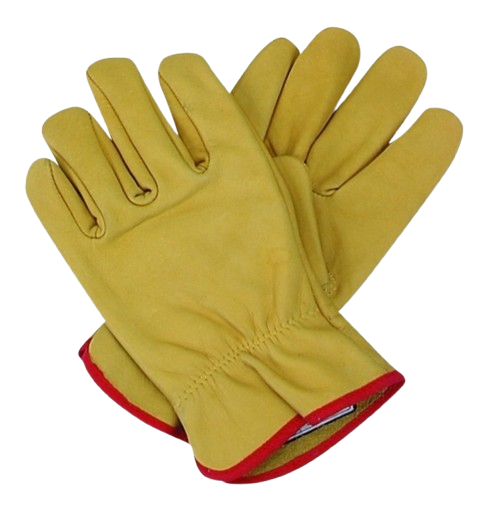

Existen distintos tipos de guantes, pero en general son una herramienta de protección personal utilizada para cuidar las manos frente a riesgos como cortes, abrasiones, químicos, calor, frío o suciedad.
Elige el tipo adecuado según la actividad, coloca los guantes asegurándote de que ajusten bien a la mano y revisa que no tengan daños. Úsalos durante toda la tarea para mantener la protección.
Ver video